User Interface¶
Overview¶
This is how the main window of ngSkinTools is laid out:
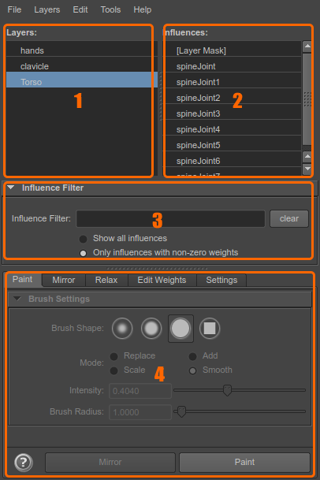
- Layers list: this is where you select active layer, and can also add/remove/arrange them;
- Influences list: select target influence to paint weights for, or a group of influences for some other operation;
- Influences filter: options for filtering influences list;
- Tools tabs: various tools for skin weights editing.
Layers list¶
The selected layer in this list is the active layer. When you paint, mirror, or perform any other weight setting operation, it targets currently selected layer. Some operations (like mirror) support multiple selected layers; use shift-select or ctrl-select to select multiple items in the list.
Layers can be added, edited and removed here using the context menu.
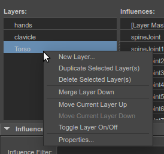
-
New Layer... - opens up a dialog for a new layer to be created. Enter the name
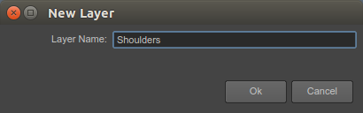
-
Duplicate Selected Layer(s) - makes a copy of selected layer; command supports multiple selected layers;
- Delete Selected Layer(s) - selected layer is removed from layers list; command supports multiple selected layers;
- Merge Layer Down - selected layer gets merged with the layer underneath it.
- Move Current Layer Up, Move Current Layer Down: change the order of layer list. Layer order is important because upper layers override contents of lower layers;
- Toggle Layer On/Off - enable/disable layer. Weights that were painted in disabled layers do not get added to the skin cluster.
-
Properties... - adjust properties of the selected layer.
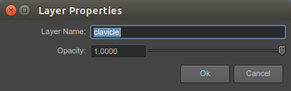
Layer opacity is one of the ways to control transparency in a layer; value
1.0means that layer is 100% enabled, while0.0effectively turns layer off (0%)
Influences list¶
This list shows skin influences (joints) of currently selected mesh. Selected item in the list is an active influence, being a target for operations like paint, copy/paste, etc. Some operations support multiple selected influences, in that case, use ctrl-select (or shift-select) to select multiple items.
The list also contains a special item to select layer mask, and, if skinCluster "Skinning Method" is set to "Weight Blended", there's also an item to edit dual quaternion blend weights:
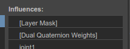
To make finding influences easier, use Influence Filter to list only those you currently need.
Use context menu for more operations:
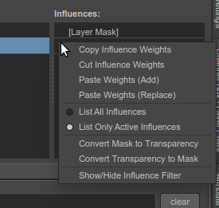
- Copy Influence Weights: for currently selected influence, copies values across all vertices into memory to be later used for
Paste Weightsoperation. - Cut Influence Weights: same as "Copy", but sets influences to 0.0 after;
- Paste Weights (Add): using weights previously stored in memory via
Cut/Copy Influence Weightsoperation, merge them into the current influence; - Paste Weights (Replace): active influence values are replaced with weights previously stored in memory via
Cut/Copy Influence Weights, discarding previous weights on the influence; - List All Influences: when this option is selected, Influences List shows all influences (unless further filtered by Influences Filter);
- List Only Active Influences: when this option is selected, only those influences will be shown that have weights painted on currently active layer. This is a convenient option when you've got your layers painted and now jumping between them tweaking weights here and there - as you switch from layer to layer, you only see influences relevant to this selected layer. Obviously, if you want to add an influence to the layer, you'll have to switch back to
List All Influences; - Convert Mask to Transparency: multiplies layer weights with mask value, and discards the mask; as a result, layer will behave the same (final transparency untouched), but it will no longer be provided by mask;
- Convert Transparency to Mask: converts all layer transparency to mask value, and upscales weights on all vertices to a sum of 1.0; this mode is useful when you started painting your layer without mask, but now want to convert to mask workflow;
- Show/Hide Influence Filter: toggles visibility of Influences Filter.
Influences filter¶
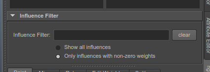
To narrow down the number of influences shown, enter a hint in Influence Filter: search box. You don't need to specify influence name precisely - try entering a fragment of what you're searching for, then refine the query when you get the results. Only influences matching the filter will be shown.
Some filter examples:
L_will match influences "L_shoulder_joint, L_arm, jnt_l_finger1" - basically anything that contains stringL_in it's name. It's also case-insensitive;L_ R_will match "L_arm, R_arm" influences; when search terms are separated by space, this basically means "show anything that matchesL_, as well as anything that matchesR_";L_*armwill match "L_upper_arm", "L_lower_arm_twist"; use placeholder*when you want to specify that influence name needs to match two fragments, with "anything in between" as*;- Combine queries as you see fit, like
L_*arm*twist R_*arm*twist shoulderto limit the list to just arm and shoulders (query will probably differ based on your naming scheme).
Show all influences / Only influences with non-zero weights correspond to all / active influences in Influences list context menu, so it's just an alternate UI for the same feature.
Paint tab¶
Paint tab provides configuration to paint weights tool. It does not start internal Maya's default Paint Skin Weights Tool, as ngSkinTools has it's own implementation.
The UI will be disabled while the tool is not active; start the paint tool by clicking Paint button at the lower right corner (Paint button is replaced by Flood while paint tool is active);
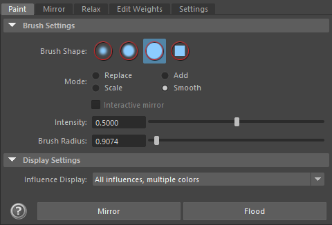
Paint tool will always target last selected layer and influence, so select those in Layers/Influences list first.
Tool settings should be familiar for Maya users already:
- Brush shape: changes the shape of the brush as well as it's opacity on the edges.
- Mode: changes brush behavior; see Paint Modes;
- Intensity: Overall intensity of the brush. For the convenience, this setting is saved per brush mode, and restored as you switch between them.
- Brush Radius: while you can use this field to set brush radius, it's much more convenient to do it interactively: as everywhere else in Maya, hold "B" button and left-drag with the mouse to grow/shrink it.
Tab buttons:
-
Paint: Start the paint tool. Switches the mesh to weights preview mode, and you can start painting the values:
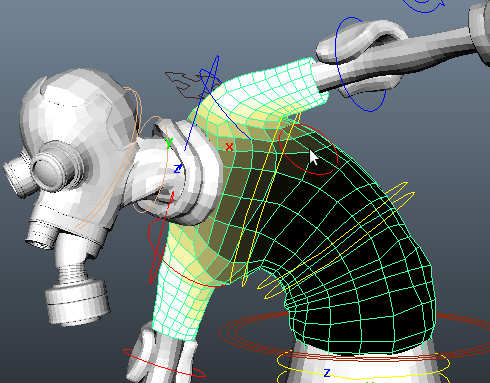
You don't need to exit the tool to switch active layer or influence. Just select them in the Layers/Influences list and continue painting.
-
Flood: apply current paint operation to the whole selection. It's almost equivalent as if you'd spend the time to paint with current brush across the whole mesh/vertex selection.
Note
This feature is mostly useful when applying some smoothiness across the whole layer. Select Smooth mode, set intensity to a lower value, and hit
Floodfew times until you're satisfied with results. -
Mirror: a shortcut to mirror operation, available in Mirror tab. Edit mirroring settings there.
Paint modes:¶
-
Replace: sets weight for an influence to specified value; when reducing weight, remainder is distributed to other influences in the layer; if there are no other influences in the layer, layer transparency is created instead.
Note
use CTRL key to invert intensity value. Intensity 1.0 becomes 0.0, 0.9 becomes 0.1, etc.
Note
use SHIFT key to switch to Smooth mode while painting.
-
Add: appends value to the current weight of an influence. Use this mode with low intensity values (e.g. 0.1) to slightly increase influence weights over the paint area.
-
Scale: multiplies current weight of an influence with intensity value. Use this mode to reduce influence weights over paint area when using high intensity values, like 0.9 or other values close to 1.0.
-
Smooth: smooth weights in a paint area. This tool affects all influences, unless layer mask is selected. Weights are averaged slightly and deformation appears smoother.
Display settings:¶
This section controls the appearance of the mesh while in paint mode.
- Influence display
- All influences, multiple colors: shows weights of all influences at once. If skeleton is colorized (when binding smooth skin, standard Maya option), then joint weights are used for the color; otherwise, a random color is chosen.
- Current influence, grayscale gradient: just the currently active influence, where white color equals 1.0 and black equals zero.
Mirror tab¶
Mirroring skin weights is an important part of skinning workflow. NgSkinTools has it's own mirroring implementation, with a few differences to Maya's "Mirror Skin Weights" tool.
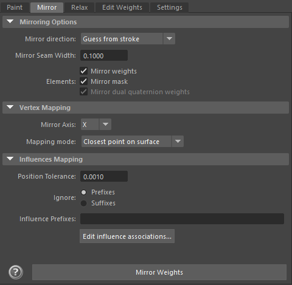
The "Mirror Weights" button will operate on selected layer (or multiple layers, if you selected more in layers list).
Mirror Options¶
-
Mirror direction: Choose the direction of the mirror: copy right-side contents on to the left side, or vice versa?
-
Guess from stroke: mirroring direction will be guessed automatically. If last paint stroke edited weights on the left side, weights will be copied to the right, and vice versa. Strokes or actions that edit both sides will be ignored; if you edit left side, and then flood weights, it will still resolve to "left->right" direction.
-
Left to right (+X to -X): will mirror weights of vertices that are on the positive side of X axis on to the verts on the negative side;
- Right to left (-X to +X) will mirror weights of vertices that are on the negative side of X axis on to the verts on the positive side;
Note
Depending on mirror axis you selected, options might be named slightly differently (
"top to bottom","front to back"); when in doubt, refer to axis direction:"+Y to -Y", etc; -
-
Mirror seam width: defines seam width (in scene distance units) between two sides; this allows for some automatic smoothing on vertices that are near mirror axis. Start with a small value, which basically results in sharp mirroring edge (as it is in standard Maya tools), and experiment with increasing it, which will make mirror operation have a falloff on the mirror seam.
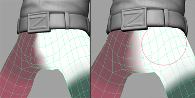
On the left: mirror result with seam width = 0.0001; on the right - 2.0; increasing seam width helped smooth weights between left and right sides automatically.
Note
This smoothing is not the same as applying some smooth on mirror axis after mirroring. Internally what happens is that on the seam axis, a flipped version of weights is blended together with original. Take a look at the picture below:
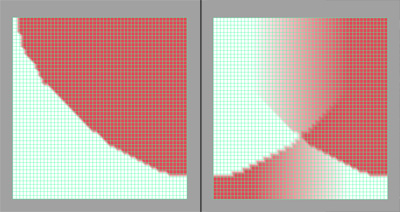
On the left, asymmetric weighting between two influences. On the right, result of mirroring with a large seam width. You can see that it's not a straightforward blur, but rather a blend of original and flipped version of weights.
It's not necessary to understand how this feature works internally, though. It's enough to know that you should set your seam width to roughly where you feel is the "width of symmetry axis" for your particular model is (for the model above, that would be roughly the width of belt buckle), and you'll find this feature to be pretty intuitive to use.
-
Elements: though you'll normally want to mirror both mask and influence weights at the same time, there might be occasions where you'd paint asymmetric mask and would want to mirror just influence weights, or vice versa.
- Mirror weights: check to mirror influences for selected layer(s);
- Mirror mask: check to mirror mask for selected layer(s);
- Mirror dual quaternion weights: check to mirror DQ weights for selected layer(s);
Vertex Mapping¶
This section controls how mesh vertices are prepared for mirroring.
- Mirror Axis: normally, "left-right" axis is X, while Y is "top-bottom", and Z is "front-back".
- Mapping mode: controls how vertices from one side are being looked up on the other side.
- Closest point on surface: in this algorithm, vertices are weighted based on the closest polygon on the opposite side. This is the most straightforward and intuitive to use option.
-
UV Space: in this algorithm, UV layout is used instead of vertex XYZ coordinates to lookup opposite side polygon. In case UV is not hit for some specific vertex(e.g., not perfectly symmetric UV), "Closest point on surface" algorithm is used instead for that vertex.
The "opposite side" in UV case means that UV layout is "flipped" around X=0.5 vertical line.
Influences Mapping¶
This section controls how left and right side influences are mapped between each other. Depending on your skeleton, they can be linked in few possible ways:
- "Middle" joints: they are mapped to themselves. Whatever weight they have on one side, will be assigned to them on the other side of the mesh;
- "Left" and "right" pairs: like "left finger" and "right finger"
- Asymmetric joints: they don't have a corresponding joint on the other side. When mirroring, their weight on the other side will be assigned to a closest joint.
To create these associations, there are multiple tools in ngSkinTools:
- Matching by distance: just like with vertices, joints are looked up on the other side based on their position values. If you have a perfectly symmetrical joints, that's what will get you most of the pairing;
- Matching by name: if your joints have a good naming convention, especially consistent left-right naming, that also can help matching joints in pairs. If you name your joints "L_thumb" and "R_thumb", you can tell ngSkinTools that joints are prefixed "L_" and "R_", and ngSkinTools will detect this as a pair.
Controls:
- Position tolerance:
- Ignore: Prefixes/Suffixes: when matching by name, choose "Prefixes" if your influence names are prefixed, like "L_thumb" and "R_thumb"; choose suffixes if it's instead "thumb_lf" and "thumb_rt"
- Influence prefixes/Influence suffices: put your influence prefixes or suffixes here. For the above example, for prefixes you'd write
L_, R_and for suffixes_lf, _rt -
Edit influences associations: view and manually edit influence associations.
Note
I'm not quite happy with the current state of manual influence associations feature and would like to redo the whole thing at some point. Please excuse me insufficient level of documentation here for now.
Relax tab¶
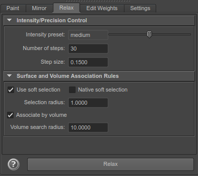